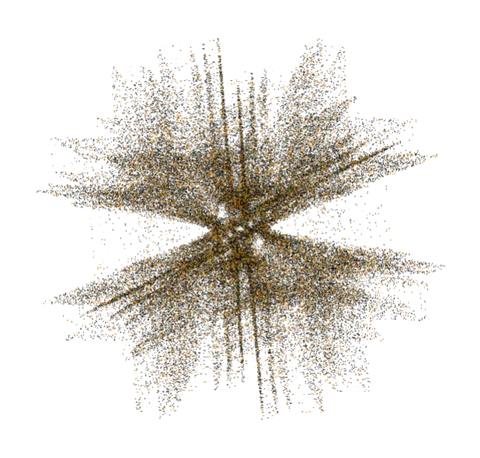

Умение замечать давление
Различать просьбу, убеждение и давление. Замечать ход разговора и своё состояние, чтобы определить момент для паузы.
Практический тренинг о давлении и манипуляциях

Три дня с Валерием Ивановичем Лыковым — врачом-психотерапевтом, кандидатом медицинских наук.
3 дня · 12 академических часов · Очно или онлайн
Практикуем, как замечать давление, брать паузу и выбирать ответ в своих интересах.
≈70%программы — упражнения
и работа с ситуациями
Психологическое давление
Прокрутите. Узнаёте себя? ↘А потом продолжали разговор у себя в голове.
Что влияет на ваше решение
У каждого своя чувствительная точкаКогда нужно ответить сейчас, а времени подумать не дают.
Когда чужие чувства становятся важнее того, что нужно вам.
У каждого свой профиль восприимчивости.
От понимания к действию
Можно знать, что вы вправе отказаться, и всё же согласиться под напором собеседника.
Чтение и видео помогают познакомиться с приёмами.
На тренинге вы выполняете упражнения, задаёте вопросы ведущему и обсуждаете способы ответа на модельных ситуациях.
Четыре навыка для сложного разговора
Различать просьбу, убеждение и давление. Замечать ход разговора и своё состояние, чтобы определить момент для паузы.
Практиковать паузу и отсрочку решения. Получить время, чтобы разобраться в предложении и собственном отношении к нему.
Замечать, что влияет именно на вас: авторитет, спешка, чувство вины или чужая эмоция. Учитывать это при выборе действия.
Уточнить, проверить информацию, выразить несогласие, отказаться или завершить разговор — с учётом ситуации и своих интересов.
Модельная ситуация
Собеседник требует немедленного решения. В упражнении можно взять паузу, уточнить причину срочности или отложить ответ. После — обсудить, что оказалось трудным и какой способ подходит вам.
Время для вашего решения
Пауза даёт время разобраться в предложении и выбрать следующий шаг.
Посмотрите, как проходит упражнение
Фрагмент занятия
Материал готовитсяГлавный тренинг · 3 дня · 12 ак. часов
От распознавания давления — к собственной последовательности действий в разговоре.
Разбираемся, чем отличаются влияние, давление и манипуляция. Учимся замечать изменения собственного состояния и практикуем базовый приём саморегуляции перед выбором ответа.
Исследуем, какие обстоятельства сильнее сбивают вас с собственной позиции. Практикуем паузу, изменение дистанции, отсрочку решения и проверку информации.
Работаем с модельными ситуациями и составляем собственную последовательность действий: что замечать, когда брать паузу и как выбирать следующий шаг. По желанию можно работать с личным опытом — в комфортном для вас объёме.
Его результаты служат материалом для обсуждения индивидуальных особенностей. Это не клиническая диагностика.
Ведущий тренинга и эксперт проекта
Тренинг ведёт Валерий Лыков. В работе проекта участвует Олег Кутушев. Оба — практикующие врачи-психотерапевты.
Врач-психотерапевт, психиатр-нарколог, кандидат медицинских наук. Заслуженный врач Российской Федерации.
О команде проекта ↗Опыт участия
После обучения
После прохождения тренинга вы получите сертификат. За три дня вы познакомитесь со способами реагирования, попробуете их в упражнениях и составите собственную последовательность действий. Применение в повседневных разговорах потребует дальнейшей практики.
Сертификат
о прохождении тренингаАнна Александрова
«Противодействие психологическому
давлению и манипуляциям»
Чтобы было спокойно и понятно
Можно работать с предложенной ситуацией и не рассказывать группе о личном опыте. Можно отказаться от упражнения или прекратить его.
Нет. Можно прийти без специальной подготовки. Тренинг рассчитан на взрослых от 18 лет.
Встречаемся по видеосвязи в реальном времени. Можно задавать вопросы ведущему и выполнять упражнения вместе с группой. Программа и продолжительность такие же, как при очной встрече.
Только если вы сами захотите. Можно выбрать предложенную ситуацию или работать со своим опытом, не рассказывая о нём группе.
Результаты авторского теста восприимчивости к психологическому давлению служат материалом для обсуждения индивидуальных особенностей. Это не клиническая диагностика.
Перед открытием набора расскажем, какие материалы вы получите и будут ли записи встреч.
Оставьте контакт и укажите удобный формат. Мы пришлём даты, расписание, стоимость и условия, ответим на вопросы перед записью.
Выберите удобный формат
В обоих форматах — три дня и 12 академических часов. После прохождения тренинга вы получите сертификат.
Живые занятия по видеосвязи с ведущим, вопросами и практическими упражнениями.
Занятия в одном пространстве, упражнения в парах и небольших группах.
Даты, стоимость и условия
Получите расписание и условия ближайшей группы в удобном формате.
| Условия | Онлайн | Очно |
|---|---|---|
| Ближайшая группа | Даты уточняются | Даты уточняются |
| Расписание | Расписание уточняется | Расписание уточняется |
| Где проходят занятия | Платформа уточняется | Адрес уточняется |
| Стоимость | Уточняется | Уточняется |
| Что входит | Состав участия уточняется | Состав участия уточняется |
| Записи встреч | Наличие и условия доступа уточняются | Наличие и условия доступа уточняются |
Оплату, порядок записи и условия отмены сообщим вместе с информацией о группе.
Следующий шаг — получить информацию
Для получения условий рассказывать о личной ситуации не нужно.
Образовательные программы
Другие программы «Лабиринта П» — для себя и для работы с людьми.
Для тех, кто хочет увереннее принимать решения в отношениях, на работе и в повседневном общении.
Для специалистов, которые хотят глубже изучить установление контакта, работу с голосом и методы внушения. Теория и практические упражнения.